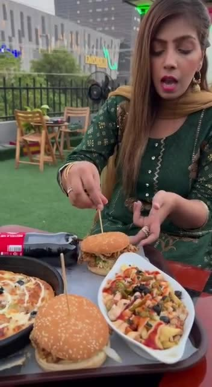

▶
Rooftop Platter & Ambiance Reel
Short-form vertical reel filmed on the Block H-2 rooftop overlooking Emporium Mall—showcasing loaded burgers, specialty pan pizza, and baked pasta to drive weekend foot traffic and DM bookings.
Turning a Johar Town rooftop café into a 20K+ organic community, live-screening hub, and daily food & coffee ritual.
271-Block H-2 Top Roof, Johar Town (Opposite Emporium Mall), Lahore · Rooftop Dining, Coffee & Live Match Screenings

Short-form vertical reel filmed on the Block H-2 rooftop overlooking Emporium Mall—showcasing loaded burgers, specialty pan pizza, and baked pasta to drive weekend foot traffic and DM bookings.

High-retention short-form Reels and creator collaborations built around four repeatable pillars: Cappuccino & Coffee Rituals, Desperado Steak & Platter Deals, Live Cricket Match Rooftop Screenings, and Customer Story Reposts.
Open @gloriacupcafe Instagram Feed ↗Located on a rooftop opposite Emporium Mall in Johar Town, Lahore, Gloria Cup Café needed more than static menu posts—it needed to capture the energy of live cricket match screenings, sizzling Desperado Steaks, loaded pizza platters, and evening cappuccinos so local foodies would choose it as their go-to hangout.
I architected a lifestyle- and food-first social engine for @gloriacupcafe built around high-retention rooftop Reels, food creator collaborations, deal-driven carousels, and match-day screening promos that turned online views into packed rooftop tables.
Scaled the brand’s organic social footprint past 20,000+ engaged local foodies across platforms, driving consistent daily DM/WhatsApp reservations, viral platter Reels, and packed rooftop match screenings.
Core production capabilities and deliverables executed in this workflow: